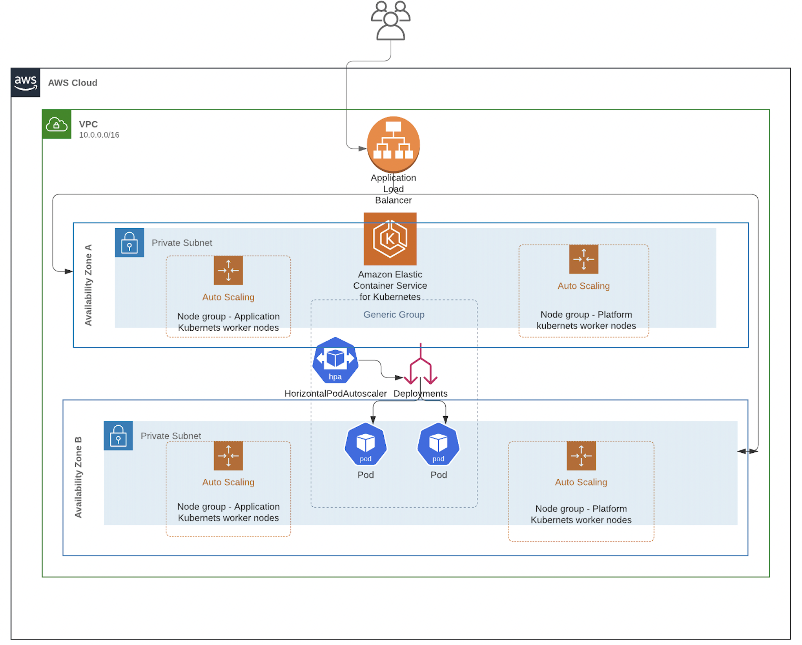
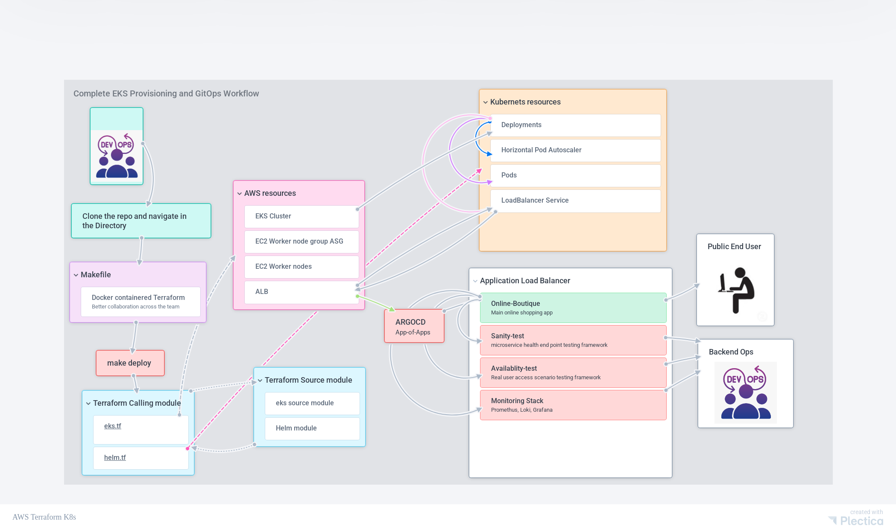

Kubernetes GitOps Platform Architecture
System Architecture

The Kubernetes GitOps Platform follows a two-repository architecture pattern:
Infrastructure Layer (k8s-infrastructure-as-code)
Components:
- AWS VPC: Multi-AZ network with public and private subnets
- EKS Cluster: Managed Kubernetes control plane
- Worker Nodes: Auto-scaling node groups in private subnets
- Application Load Balancer: External access to services
- Security Groups: Network security and access control
- IAM Roles: Service accounts and permissions
Platform Services Layer (k8s-platform-toolkit)
Components:
- ArgoCD: GitOps continuous delivery
- Monitoring Stack: Prometheus, Grafana, kube-state-metrics, node-exporter
- Logging Stack: Loki, Promtail
- Testing Tools: Sanity Test, Availability Test
- Demo Applications: Online Boutique microservices
- Chaos Engineering: Resilience testing tools
GitOps Workflow

Workflow Steps
-
Infrastructure Deployment
- Terraform provisions AWS EKS cluster
- ArgoCD is installed via Helm
- App-of-apps pattern is configured
-
Platform Toolkit Deployment
- ArgoCD references k8s-platform-toolkit repository
- App-of-apps pattern deploys all platform applications
- Applications sync automatically from Git
-
Continuous Deployment
- Changes pushed to Git repositories
- ArgoCD detects changes automatically
- Applications sync with zero-downtime rolling updates
App-of-Apps Pattern
The platform uses ArgoCD's app-of-apps pattern for hierarchical application management:
k8s-platform-toolkit (Root App)
├── monitoring-stack
│ ├── Prometheus
│ ├── Grafana
│ ├── kube-state-metrics
│ └── node-exporter
├── loki-stack
│ └── Loki
├── promtail
├── online-boutique
│ └── 11 microservices
├── sanity-test
└── availability-test
Sync Waves
Applications deploy in ordered waves:
- Wave 1: Testing infrastructure (Sanity Test, Availability Test)
- Wave 2-4: Monitoring stack components
- Wave 5: Promtail (depends on Loki)
- Wave 99: Chaos experiments (manual sync)
Network Architecture
VPC Structure
- Public Subnets: Internet Gateway access, NAT Gateway
- Private Subnets: Worker nodes, internal services
- Multi-AZ: High availability across availability zones
- Security Groups: Network-level access control
Service Access
- LoadBalancer Services: External access via AWS ALB
- ClusterIP Services: Internal cluster communication
- Ingress: Optional ingress controller for HTTP routing
High Availability Design
Cluster Level
- Multi-AZ Deployment: Control plane and nodes across zones
- Auto Scaling Groups: Worker node auto-scaling
- Health Checks: Node and pod health monitoring
Application Level
- Replica Sets: Multiple pod instances
- Horizontal Pod Autoscaler: Automatic pod scaling
- Rolling Updates: Zero-downtime deployments
- Readiness Probes: Health check validation
Data Flow
Metrics Flow
Pods → Prometheus → Grafana → Dashboards
Nodes → node-exporter → Prometheus
K8s Objects → kube-state-metrics → Prometheus
Logs Flow
Pods → Promtail → Loki → Grafana
GitOps Flow
Git Repository → ArgoCD → Kubernetes API → Pods
Security Architecture
Network Security
- Private Subnets: Worker nodes isolated from internet
- Security Groups: Restrictive network policies
- VPC Flow Logs: Network traffic monitoring
Access Control
- IAM Roles: AWS resource access
- RBAC: Kubernetes role-based access
- Service Accounts: Pod-level permissions
Secrets Management
- Kubernetes Secrets: Application secrets
- AWS Secrets Manager: Integration capability
- ArgoCD Secrets: Git repository credentials